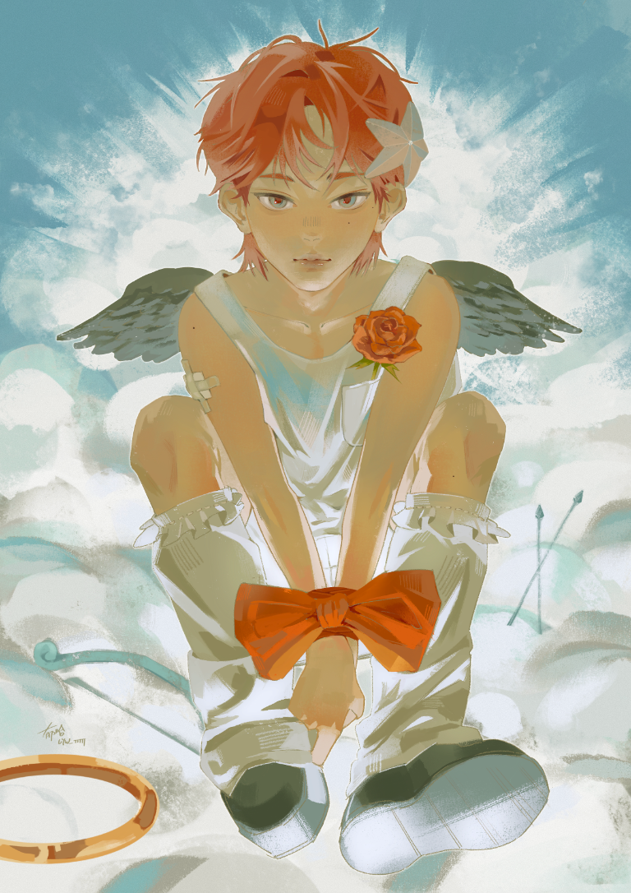
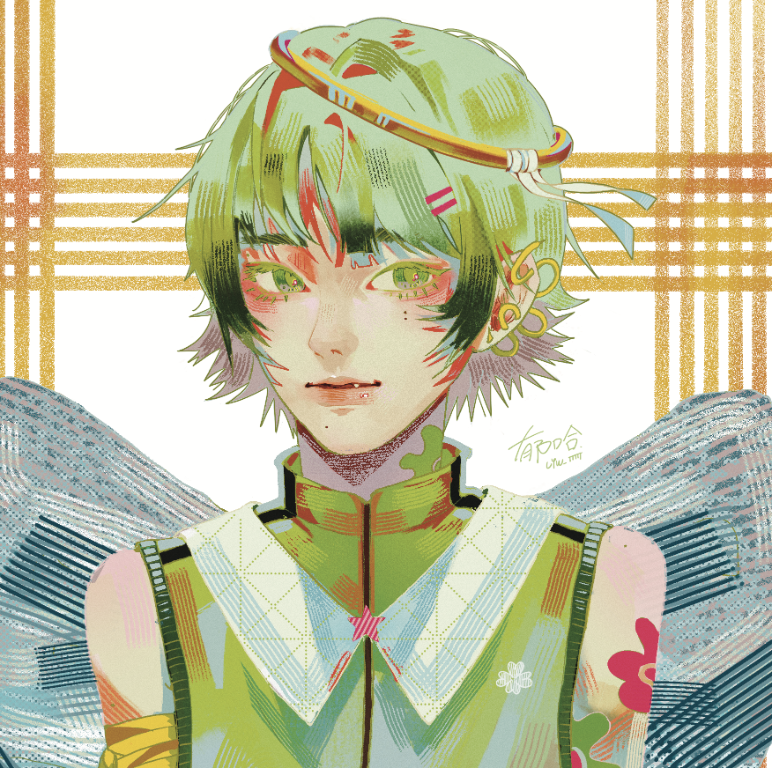
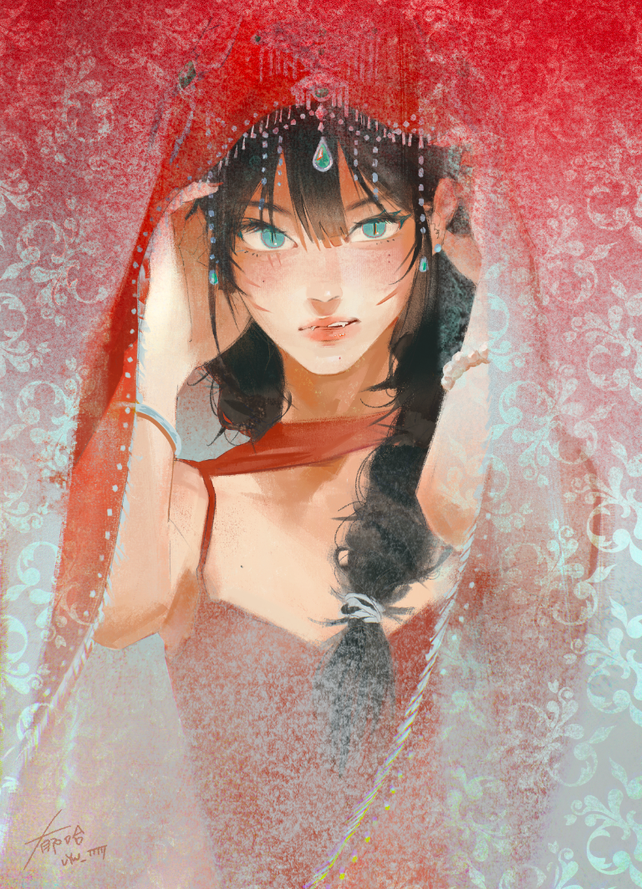
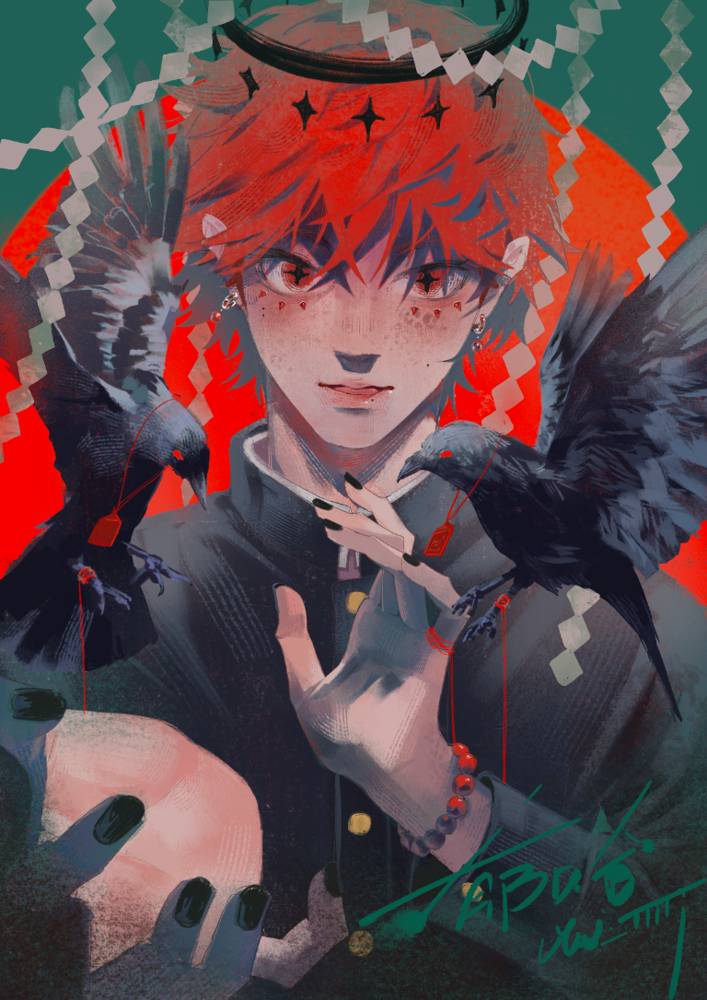
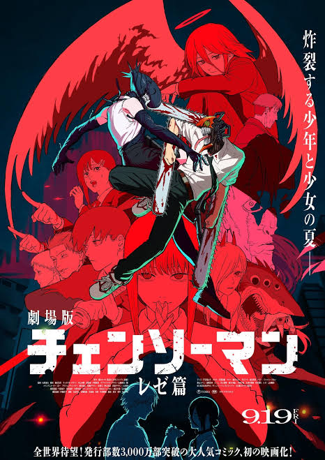

闖禍
我將主角愛神變成戀愛腦，他願意不顧一切代價替心愛的人摧毀她討厭的世界，於是就被抓來審問了


我將主角愛神變成戀愛腦，他願意不顧一切代價替心愛的人摧毀她討厭的世界，於是就被抓來審問了

村子那個兇巴巴的女人要出嫁了阿!

主角是一位能夠幫眾人牽線的仙人，在日本神話中被視為導引、勝利與吉祥的神鳥

FAVORITE ANIME
在這個世界上充斥著被稱為「惡魔」的怪物，惡魔是帶著動植物和概念等所有事物的名稱而誕生，力量比人類更強大的怪物。人們認為該名稱越是恐怖，惡魔的力量就越大。
MY ULTIMATE INSPIRATION
是韓國SM娛樂於2024年推出的日本男子組合，「WISH」意味著將成員們和粉絲們的願望相結合，組合由四名日本成員RIKU、YUSHI、RYO、SAKUYA及兩名韓國成員SION與JAEHEE組成